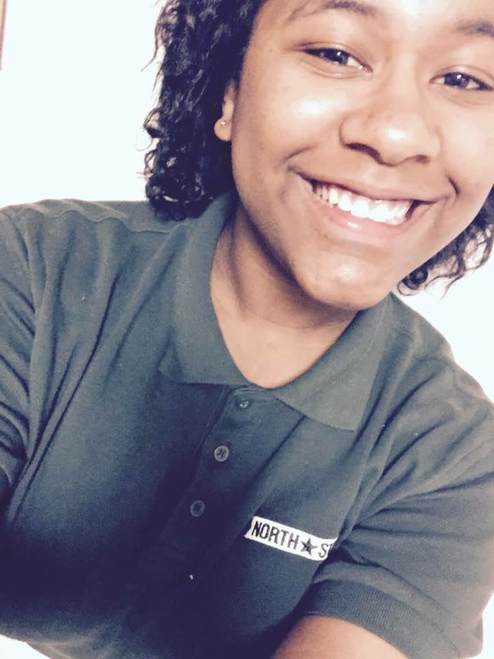

ABOUT US
Amanda Rodriguez
.... .... .... |
Mely Arias
I am a HS student with experience in programming, debating, and legal research. I am currently preparing to enter college with interest in Software Engineering. Within the legal industry, I have interned at three different law firms in which I debated disparate constitutional issues. My strengths include good oral communication, analytical and logical reasoning, and time management. |
|---|---|
Julia Andujar.... .... .... |
Amanda Mei
.... .... .... |